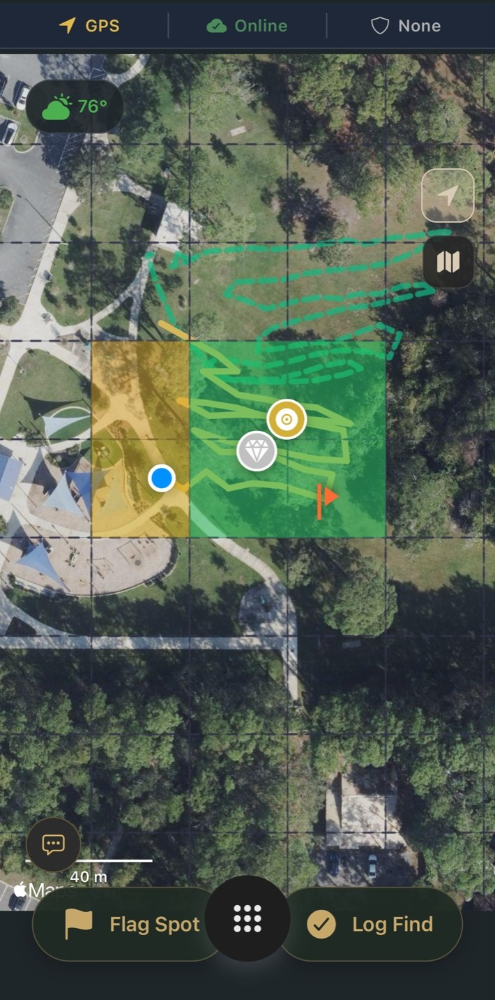
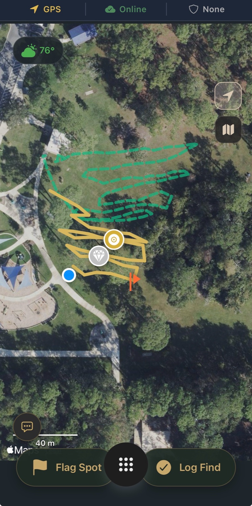

If you've ever gone back to a spot you were sure you'd already worked, only to pull something good out of the ground within the first few minutes, it's a strange feeling. Part excitement, part frustration. Because the question hits you almost immediately: how did I miss that?
Most of the time, it's not your machine, and it's not your skill. It's coverage.
The Visibility Problem
Out in the field, it's surprisingly hard to keep track of where you've actually been. You might feel like you're moving methodically, maybe even slowing down in areas that seem promising, but without any real reference, your brain fills in the gaps. You end up overlapping certain paths more than you realize while leaving other sections barely touched. Over the course of a hunt, it all blends together, and by the time you leave, you're left with a general impression instead of a clear understanding of what you actually covered.
That gets even worse when you return to the same location. What felt familiar last time becomes vague. You remember parts of the site, but not your exact path, not where you focused your time, and definitely not where you unintentionally skipped. So you either repeat the same ground or avoid areas you think are "done," even though they might not be.
At some point, you realize the problem isn't effort. It's visibility.
Seeing Where You've Been
Once you can actually see your coverage, everything starts to click.
During a hunt, Aureal records your movement in real time, building a live trail behind you as you walk. It's not something you have to manage or think about, it just happens in the background while you detect. At any point, you can glance down and immediately understand where you've been and where you haven't. That alone changes how you move, because instead of guessing, you're adjusting based on something you can actually see.

Working a Site with Precision
But where it really starts to feel different is when you combine that with a more intentional approach.
If you want to slow things down and be precise, you can switch into Systematic Mode, which lays a grid over the area and pairs it with a live coverage heatmap. As you move, the grid begins to fill in, showing which sections you've worked and which ones still need attention. Instead of wandering or loosely zig-zagging across a field, you're working it piece by piece, knowing exactly what's been covered and what hasn't. It takes what is usually a mental exercise and turns it into something visual and grounded.
That's available to everyone while they're actively hunting, and it makes an immediate difference in how thorough your search actually is.
Coming Back Smarter
Where things go a step further is when you come back later.
For most detectorists, returning to a site means relying on memory again, trying to reconstruct what you did last time and where you might want to focus now. With Aureal, your past hunts don't disappear. If you're a Pro user, those previous trails show up when you're back in the area, layered directly onto the map around you. You can see exactly where you walked before, where you found things, and where you flagged signals that you might not have recovered yet.

It turns a return visit into a continuation instead of a reset. You're not guessing where to go next, you're picking up where you left off.
Building a Clear Picture Over Time
Over time, that builds into something most people never really have with detecting, which is a clear, visual understanding of how thoroughly a site has actually been searched. You start to notice patterns, areas you've favored, areas you've neglected, and how your approach changes from one hunt to the next.
In a hobby where success often comes down to patience and coverage, that kind of visibility matters more than most people realize. It's the difference between hoping you've done enough and knowing exactly what's left.
And once you can see your coverage clearly, you stop asking how you missed something and start making sure you don't.
See your coverage in real time
GPS trail tracking is built into every hunt. Pro users get past hunt overlays to pick up where they left off.
Download Aureal